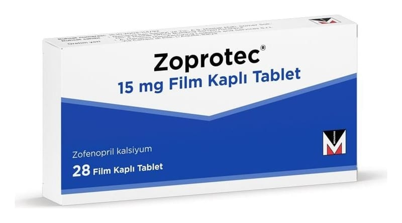

Zoprotec 15 mg Film Kaplı Tablet, 14 Adet

Ne için kullanılır
KT · Bölüm 1ZOPROTEC, anjiyotensin dönüştürücü enzim (ADE) inhibitörleri adı verilen kan basıncını azaltıcı ilaçlar grubuna ait zofenopril kalsiyum içerir.
ZOPROTEC yüksek kan basıncının (hipertansiyon) tedavi edilmesinde kullanılır. Kalp yetmezliği belirtisi veya semptomu gösteren veya göstermeyen hastalarda ve kan pıhtılarını dağıtma tedavisi (trombolitik tedavi) almamış hastalarda kalp krizinin tedavisinde (akut miyokardiyal enfarktüs) de kullanılır.
ZOPROTEC, beyaz, oblong, çentikli film kaplı tabletlerdir. Tablet eşit dozlara bölünebilir. 14 ve 28 film tabletlik ambalajlar halinde kullanıma sunulmuştur.